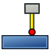

CAM Probe

- Menu location
-
- Workbenches
- Default shortcut
-
None
- Introduced in version
-
-
- See also
Description
The CAM Probe command creates a Probe operation. The operation generates a rectangular grid of straight-probe moves (G38.2) over the Job Stock and records the probed Z values in a file. The resulting file can be used by the Z Depth Correction dressup to adapt a toolpath to a surface that is not parallel to the machine bed (for example PCB auto-levelling). The operation requires a Tool Controller whose Tool Bit uses the probe Tool Shape.
Usage
-
Select (a Job must exist; the command is not on a toolbar).
-
In the task panel set the number of grid points, the probe offsets and the output file name.
-
On the Tool Controller tab select a Tool Controller with a probe Tool Bit; otherwise the error "This operation requires a tool controller with a probe tool" is shown.
-
Set Final Depth (the lowest Z the probe may travel to) and Safe Height (the Z from which each probe move starts) on the Depths and Heights tabs.
-
Press OK.
Options
The task panel provides:
-
Probe grid points X/Y: number of probe points along X and Y (3 to 1000). Points are spread evenly between the minimum and maximum of the Stock (or Base Shape) bounding box.
-
X offset / Y offset: offset between the probe tip and the tool position, added to every probe point.
-
File name: output file the controller should write the probe results to (default
ProbePoints.txt), with a … save-file button. -
Depths: Final depth is the probe target Z.
-
Heights: Safe height is the start Z of each probe move, Clearance height is used for the first rapid.
-
Tool Controller: must reference a Tool Bit with the probe shape.
Generated G-code
The operation emits a comment (Begin Probing <file name>), a rapid to Clearance Height, then for every grid point: G0 X Y Z<SafeHeight>, G38.2 Z<FinalDepth> F<vertical feed of the Tool Controller>, G0 Z<SafeHeight>, and finally the comment (PROBECLOSE). introduced in 26.3: the opening and closing comments carry the annotations probe_open (with the file name) and probe_close so that Post-Processors can open and close the probe log file; currently only the OpenSBP Post-Processor implements this.
Properties
-
Xoffset (
Length): X offset between tool and probe. -
Yoffset (
Length): Y offset between tool and probe. -
PointCountX (
Integer): Number of points to probe in X-direction. -
PointCountY (
Integer): Number of points to probe in Y-direction. -
BaseShape (
Link): Limit probe area by shape; the grid is built on the shape’s bounding box and points outside the shape at final depth are skipped. Not exposed in the task panel. introduced in 26.3
-
OutputFileName (
File): The output location for the probe data to be written. -
ToolController (
Link), CoolantMode, Active, Comment, UserLabel, CycleTime: standard Operation properties.
-
StartDepth, FinalDepth, StepDown, FinishDepth, ClearanceHeight, SafeHeight: standard depth and height properties; only FinalDepth, SafeHeight and ClearanceHeight affect the probe moves.
Notes
-
FreeCAD ships a
probeTool Shape and a probe Tool Bit in the default library; the operation checks the Tool Bit’s shape name and refuses other tools. -
The Z Depth Correction dressup reads a probe log in the LinuxCNC G38 format (one line per point with 9 coordinates XYZABCUVW); the file produced by your controller must follow that format.
Scripting
See also: FreeCAD Scripting Basics.
Example:
import Path.Op.Probe
obj = Path.Op.Probe.Create("Probe", parentJob=job)
obj.PointCountX = 5
obj.PointCountY = 5
obj.OutputFileName = "/tmp/ProbePoints.txt"
FreeCAD.ActiveDocument.recompute()